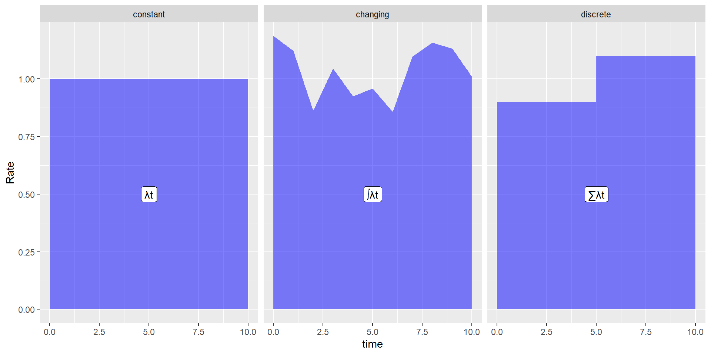
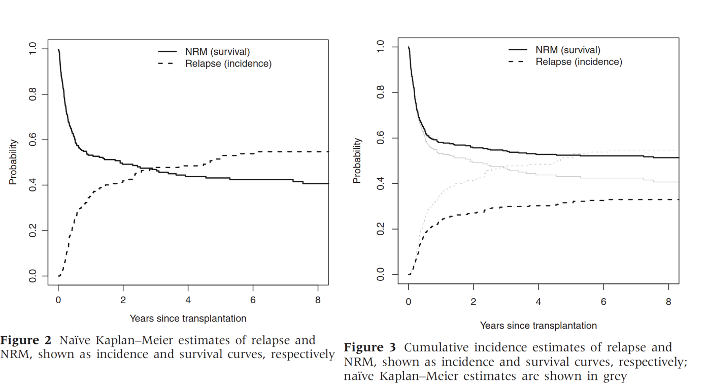

| rate | 1 year(s) | 2 year(s) | 3 year(s) | 4 year(s) |
|---|---|---|---|---|
| 0.1 | 0.10 | 0.18 | 0.26 | 0.33 |
| 0.2 | 0.18 | 0.33 | 0.45 | 0.55 |
| 0.3 | 0.26 | 0.45 | 0.59 | 0.70 |
| 0.4 | 0.33 | 0.55 | 0.70 | 0.80 |
Competing risks
David McAllister
2025-01-17
Learning outcomes
- Understand relationship between rates and risks
- Understand concept of competing risks
- Get a feel for the impact of competing risks on outcomes and treatment effects
Overview
Spend some time on rates and risks
Proceed to competing risks
Discussion, equations and interactive plots (via a Shiny app)
Why there are some equations
Only if you find these helpful
Tried hard, but I am not a statistician - some errors possible, corrections are welcome
Scenarios where we might find competing risks
Cancer
- Trial of a cancer treatment
- Death from relapse
- Death from non-relapse related causes
Cardiovascular
- Trial of a treatment for myocardial infarction (heart attack)
- Cardiovascular death
- Bleeding death
- Non-cardiovascular non bleeding death
Pregnancy
- Long-term outcomes following chemotherapy - childbirth
- Childbirth
- Relapse
Exercise
Come up with some examples of competing risks
Rates and risks
Rates and risks
- Rates - events per person-time
- Single event per person - incidence rate
- Otherwise - event rates
- Risk - % or proportion of people experiencing an event
Synonyms
- Rates - incidence density, force of mortality, force of morbidity, hazard rate
- Risk - cumulative incidence
Uses
- Rates - understanding causation, modelling
- Risks - prediction, magnitude, public health/policy, clinical decision-making
Incidence rate and hazard rate
- Hazard rate
- mathematics/statistics
- instantaneous risk
- Conditional probability
- Incidence rate
- epidemiology
- empirical examples
- Number at risk
Equivalent concepts
In the absence of competing risks
1 to 1 relationship. Constant rates
\[ Risk = 1 - e^{-\lambda t}\]
\[\frac{1}{e^{\lambda t}} , \frac{1}{2.72^{\lambda t}} , \frac{1}{2.72^1} , \frac{1}{2.72^2} , \frac{1}{2.72^3} , \frac{1}{2.72^4}\]
\[\frac{1}{e^{\lambda t}}, \frac{1}{2.72^{\lambda t}}, \frac{1}{2.7}, \frac{1}{7.4}, \frac{1}{20.12}, \frac{1}{54.74}\]
\[\frac{1}{e^{\lambda t}}, \frac{1}{2.72^{\lambda t}}, 0.4, 0.14, 0.05, 0.02\]
100 events per 1,000 person years, 0.1 events per person-year; 10 years; \(\lambda t = 1\)
Risk and rates
Risk of event at different follow-up periods
Exercise 1 Questions
- A machine has a constant failure rate of \(\lambda = 0.001\) failures per year. Calculate the risk of the machine failing within 10 years?
- A machine has a constant failure rate of \(\lambda = 0.010\) failures per year. Calculate the risk of the machine failing within 1 year?
- A machine has a constant failure rate of \(\lambda = 0.010\) failures per year. Calculate the risk of the machine failing within 10 years?
- A machine has a constant failure rate of \(\lambda = 0.10\) failures per year. Calculate the risk of the machine failing within 100 years?
- A machine has a constant failure rate of \(\lambda = 0.90\) failures per year. Calculate the risk of the machine failing within 10 years?
- Why are the answers to question 1 and question 2 the same?
- Why is it that for the first three we would have gotten a similar answer if we just multiplied the rate per year by the number of years, but this is not the case for the last two questions?
- Why is the answer to question 2 similar to, but not exactly, ten times the answer to question 2?
- What assumptions do all five questions make?
Exercise 1 Answers
- A machine has a constant failure rate of \(\lambda = 0.001\) failures per year. Calculate the risk of the machine failing within 10 years?
- A machine has a constant failure rate of \(\lambda = 0.010\) failures per year. Calculate the risk of the machine failing within 1 year?
- A machine has a constant failure rate of \(\lambda = 0.010\) failures per year. Calculate the risk of the machine failing within 10 years?
- A machine has a constant failure rate of \(\lambda = 0.10\) failures per year. Calculate the risk of the machine failing within 100 years?
- A machine has a constant failure rate of \(\lambda = 0.90\) failures per year. Calculate the risk of the machine failing within 10 years?
Why are the answers to question 1 and question 2 the same? Because \(\lambda \times t\) is the same for both.
Why is it that for the first three we would have gotten a similar answer if we just multiplied the rate per year by the number of years, but this is not the case for the last two questions? For the first three, the rate and follow-up time are short (ie \(\lambda \times t\) is small) whereas in the latter two questions it is large
Why is the answer to question 2 similar to, but not exactly, ten times the answer to question 2? Because \(\lambda \times t\) is quite low for both examples and so the relationship between \(\lambda \times t\) and risk is close to linear in this range, but is not quite linear.
What assumptions do all five questions make? There are no competing risks. The rates are constant over time
Time-varying rates
- Rates varying continuously
\[ Risk = 1 - e^{-\int(\lambda_t dt)}\] - Rates constant within discrete time periods
- 0-3 months 2.5 per 1000 person years
- 4-12 months 1.0 per 1000 person years\[ Risk = 1 - e^{- \sum(\lambda_t t_t)}\]
Area under the curve
Plot of varying rates and risk
Example using incidence rate at discrete time periods
Table for incidence rate at different time periods
| time_period | N_at_risk | duration | events | person_time | rate |
|---|---|---|---|---|---|
| 1 | 1000 | 0.5 | 231 | 442.2 | 52.2 |
| 2 | 769 | 0.5 | 168 | 342.5 | 49.1 |
| 3 | 601 | 0.5 | 149 | 263.2 | 56.6 |
| 4 | 452 | 0.5 | 129 | 193.8 | 66.6 |
| 5 | 323 | 0.5 | 96 | 137.5 | 69.8 |
| 6 | 227 | 0.5 | 65 | 97.2 | 66.8 |
| 7 | 162 | 0.5 | 44 | 70.0 | 62.9 |
| 8 | 118 | 0.5 | 27 | 52.2 | 51.7 |
| 9 | 91 | 0.5 | 21 | 40.2 | 52.2 |
| 10 | 70 | 0.5 | 15 | 31.2 | 48.0 |
Table for incidence rate at different time periods, continued
| time_period | N_at_risk | duration | events | person_time | rate | Risk |
|---|---|---|---|---|---|---|
| 1 | 1000 | 0.5 | 231 | 442.2 | 52.2 | 23.1% |
| 2 | 769 | 0.5 | 168 | 342.5 | 49.1 | 39.9% |
| 3 | 601 | 0.5 | 149 | 263.2 | 56.6 | 54.8% |
| 4 | 452 | 0.5 | 129 | 193.8 | 66.6 | 67.7% |
| 5 | 323 | 0.5 | 96 | 137.5 | 69.8 | 77.3% |
| 6 | 227 | 0.5 | 65 | 97.2 | 66.8 | 83.8% |
| 7 | 162 | 0.5 | 44 | 70.0 | 62.9 | 88.2% |
| 8 | 118 | 0.5 | 27 | 52.2 | 51.7 | 90.9% |
| 9 | 91 | 0.5 | 21 | 40.2 | 52.2 | 93% |
| 10 | 70 | 0.5 | 15 | 31.2 | 48.0 | 94.5% |
Exercise 2
What happens to risks and effect estimates for different rates
https://ihwph-hehta.shinyapps.io/competing_risks/
Set “Rate of target event per 100 person-years:” to 10, and the “Rate ratio for effect of treatment on target event:” to 0.78. Leave the other settings as they are. Examine the effect of increasing the “Rate of target event per 100 person-years:”. What impact do these changes have on the:-
Risk of target events
Relative risk
Absolute risk reduction
What happens to the relationship between the rate ratio and risk ratio as you increase the target event rate?
What implications does this have for interpreting rate ratios?
Exercise 2 - answers
What happens to risks and effect estimates for different rates
https://ihwph-hehta.shinyapps.io/competing_risks/
Set “Rate of target event per 100 person-years:” to 10, and the “Rate ratio for effect of treatment on target event:” to 0.78. Leave the other settings as they are. Examine the effect of increasing the “Rate of target event per 100 person-years:”. What impact do these changes have on the:-
Risk of target events It increases, but by less with each increase.
Relative risk It gets closer to one
Absolute risk reduction Over the initial year it gets larger, but it is smaller over longer time periods.
What happens to the relationship between the rate ratio and risk ratio as you increase the target event rate? It tends towards the null
What implications does this have for interpreting rate ratios? Long follow-up times or large rates mean that rate ratios ratios cannot be interpreted as risk ratios
Censoring

Example of censoring
Calculating cumulative incidence (risk)
Statistical methods to cope with censoring
- Kaplan-Meier
\[ S_t = \prod_{i: t_i \le t}(1 -\frac{d_i}{n_i}) \]
- Nelson-Aalen
\[{\tilde H}_{(t)}=\sum_{i: t_i \le t}(\frac{d_{i}}{n_{i}})\]
with \(d_{i}\) the number of events at \(t_{i}\) and \(n_{i}\) the total individuals at risk at \(t_{i}\)
- Nelson Aalen - \(risk = 1 - e^{-H_{(t)}}\)
Worked example
see Excel spreadsheet “competing_risk_calculation.xlsx”
Summary: without competing risks
- Rates lie between 0 and infinity
- Risks lie between zero and 1
- Risks can be estimated from rates (and vice versa)
- doubling rate and doubling time have the same effect on the risk
- The relationship between rates and risk is non-linear
- The relationship between time and risk is non-linear
- If the rate ratio is constant over time, the risk ratio will attenuate over time
- Rate ratios are NOT risk ratios
Competing risks
What happens to risk of event if there is a competing event
https://ihwph-hehta.shinyapps.io/competing_risks/
Set “Rate of target event per 100 person-years:” to 10 and “Rate ratio for effect of treatment on target event:” to 0.78. Leaving the other settings as they are, gradually increase the event rate for competing events. NOTE THAT IN THIS SCENARIO THE TREATMENT IS NOT RELATED TO THE COMPETING EVENT. What impact do these changes have on the:-
- Risk of target events
- Odds ratio
- Relative risk
- Absolute risk reduction
Repeat the exercise varying the target event rate too.
Estimating risk if there are competing events
If no censoring
| Relapse | Death | Either | Relapse_Cum | Death_Cum | Either_Cum | Relapse_Risk | Death_Risk | Either_Risk |
|---|---|---|---|---|---|---|---|---|
| 17 | 10 | 27 | 17 | 10 | 27 | 0.017 | 0.010 | 0.027 |
| 19 | 7 | 26 | 36 | 17 | 53 | 0.036 | 0.017 | 0.053 |
| 24 | 8 | 32 | 60 | 25 | 85 | 0.060 | 0.025 | 0.085 |
| 11 | 10 | 21 | 71 | 35 | 106 | 0.071 | 0.035 | 0.106 |
| 20 | 11 | 31 | 91 | 46 | 137 | 0.091 | 0.046 | 0.137 |
| 18 | 10 | 28 | 109 | 56 | 165 | 0.109 | 0.056 | 0.165 |
| 21 | 11 | 32 | 130 | 67 | 197 | 0.130 | 0.067 | 0.197 |
| 27 | 7 | 34 | 157 | 74 | 231 | 0.157 | 0.074 | 0.231 |
What if there is censoring

Why
Dashed line shows KM estimate treating non-relapse death as censoring
Solid line shows KM estimate treating non-relapse death as censoring
Double counting censoring if sum these
Why is it different from censoring due to loss to follow-up
We assume that such censoring is non-informative
KM estimates the survival if those who died of a competing risk had had same underlying rates as those who did not die from a competing risk
Relationship between rates and risk
\[ Risk_1(t) = \int_0^t{S(t)\lambda_1(t) dt} \]
\[ S(t) = exp^{- \int_0^t{\lambda_1(t) + \lambda_2(t) dt}} \]
At any time, survival plus Risk1 plus Risk2 always equals 1.
Work through an example in excel
Area under the curve
Impact of this graphically
Cause-specific hazard ratios
Can also use Cox regression to estimate the cause-specific hazard
Same model, different interpretation
Cannot directly translate to risk
Instead combine the cause-specific hazards using the equation in previous slide to estimate the risk of each outcome
- R packages such as mstate and msm allow combination of different models
- Rely on simulation or bootstrapping to get 95 % confidence intervals
Modelling cumulative incidence directly
Can also estimate the cumulative incidence directly using Fine and Gray model
Produces regression coefficients for effect of a predictor on the sub-distributional hazard rate
Unlike the hazard rate from a Cox model this has no natural interpretation
Direction of effect on cause-specific hazard rates
| Prognostic score | Relapse Cox | Death Cox | ||
|---|---|---|---|---|
| Very low | 1 | 1 | ||
| Low | 1.01 (0.81-1.27) | 1.57 (1.25-1.97) | ||
| Medium | 1.28 (1.03-1.59) | 2.01 (1.61-2.52) | ||
| High | 1.57 (1.25-1.99) | 2.68 (2.12-3.37) | ||
| Very high | 2.67 (2.06-3.47) | 3.98 (3.09-5.13) |
Direction of effect on cause-specific hazard rates and risk
| Prognostic score | Relapse Cox | Relapse Fine and Gray | Death Cox | Death Fine and Gray |
|---|---|---|---|---|
| Very low | 1 | 1 | 1 | 1 |
| Low | 1.01 (0.81-1.27) | 0.93 (0.75-1.16) | 1.57 (1.25-1.97) | 1.56 (1.24-1.96) |
| Medium | 1.28 (1.03-1.59) | 1.07 (0.87-1.33) | 2.01 (1.61-2.52) | 1.94 (1.55-2.42) |
| High | 1.57 (1.25-1.99) | 1.17 (0.93-1.48) | 2.68 (2.12-3.37) | 2.48 (1.96-3.12) |
| Very high | 2.67 (2.06-3.47) | 1.55 (1.19-2.02) | 3.98 (3.09-5.13) | 3.27 (2.5; .1.22) |
What happens to risks and effect estimates if the treatment also affects the competing event
https://ihwph-hehta.shinyapps.io/competing_risks/
Set “Rate of target event per 100 person-years:” to 10, “Rate ratio for effect of treatment on target event:” to 0.78, “Rate of competing event per 100 person-years:” to 0.10 and “Rate ratio for effect of treatment on competing event:” to 1. Examine the effect of changing the “Rate ratio for effect of treatment on competing event:”. What impact do these changes have on the:-
- Risk of target events
- Odds ratio
- Relative risk
- Absolute risk reduction
Specifically, what happens to the effect of the treatment on the target event when the treatment also increases the competing risk. Do you think that this is generally a good thing?
Additional references
see https://docs.google.com/document/d/1eqVzqYM6ozlrt5I_4aqqe6OIR6OV6EJ8G6Tg1lBaQ4Q/edit?usp=sharing
You will also find the link to this on the front-page of https://github.com/dmcalli2/Advanced_epidemiology_course